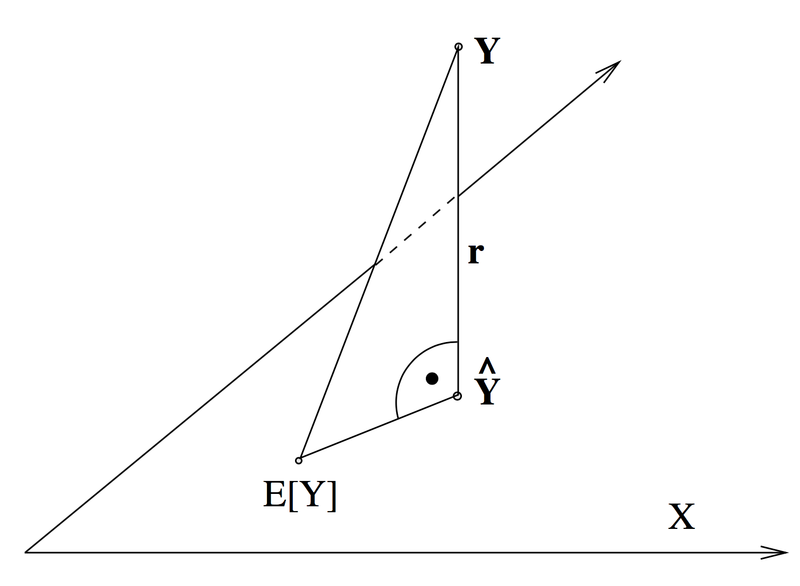
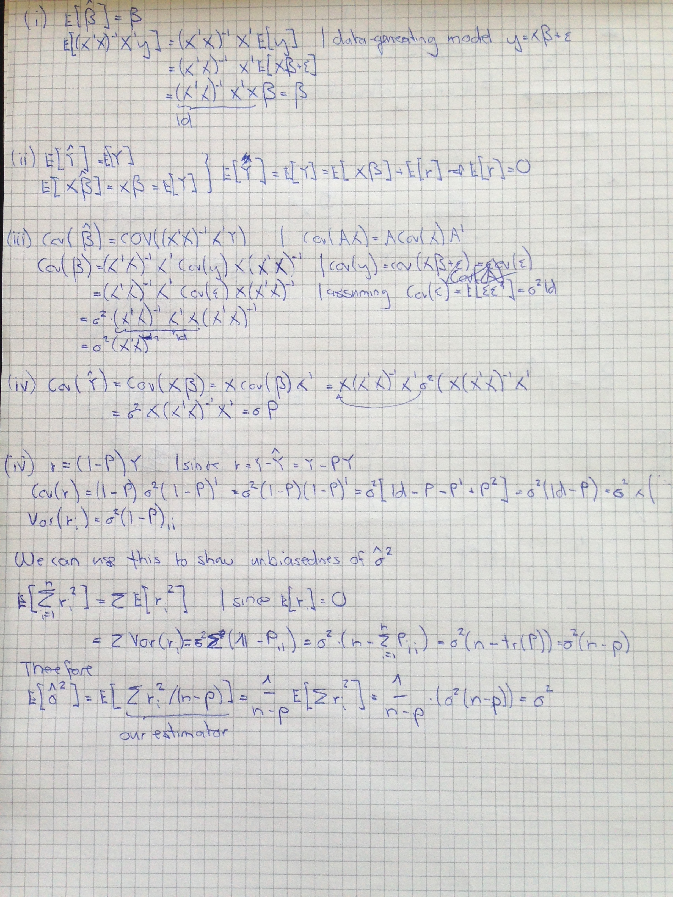

Chapter 2 Multiple Linear Regression
This chapter has not yet been summarized completely.
Since liner models are well known (at least to me), the chapter is kept very brief.
The goal of linear modelling is
- A good fit: Explain a lot of variance and keep the errors small.
- Good parameter estimates.
- Prediction: Predict new values.
- Inference: Say something about whether a variable has an influence or not on the response via significance levels and confidence intervals.
Note that a good (in-sample) fit conflicts with good prediction out-of-sample.
Linear models are stochastic, since \(\epsilon\) is stochastic and hence the response variable \(Y_i\) also. We can assume that the predictors are non-random.
Linear models are called linear because they are linear in the coefficients, not linear in the predictors The predictors can be transformed arbitrary.
Note the difference between the residuals \(r_i\) and the errors \(\epsilon_i\). The variance of the error can be estimated with
\[ \hat{\sigma}^2 = \frac{1}{n - p} \sum\limits_{i = 1}^n {r_i}^2\] The solution linear models is computed via ordinary least squares and can be derived analytically.
\[\hat{\beta} = (X'X)^{-1}X'Y\] For numerical stability reasons, do not compute the inverse of a matrix if possible, but do a QR decomposition instead. Here, we can do that by using the normal equations \[ \begin{split} \hat{\beta} & = (X'X)^{-1}X'Y\;\;\;\;\, | \times (X'X) \;\; \text{from left} \\ (X'X)\hat{\beta} &= X'Y \;\;\; \;\;\; \;\;\; \;\;\; \;\;\; | X = QR \;\;\; \text{whereas} \;\;Q \;\; \text{is orthogonal} \\ R'R\hat{\beta} &= X'Y \;\;\; \;\;\; \;\;\; \;\;\; \;\;\; | \;\; \text{set} \;\; c= R\beta \\ R'c & = X'Y \\ \end{split} \]
Since \(R'\) is a lower triangular matrix, you can now solve for \(c\) recursively.
\[\begin{pmatrix} \cdots & \cdots & \cdots & \cdots & \cdots \\ & \cdots & \cdots & \cdots & \cdots \\ & & \cdots & \cdots & \cdots \\ & & & \cdots & \cdots \\ \large 0 & & & & r_{nn} \end{pmatrix} \times \begin{pmatrix} c_1 \\ \vdots \\ \vdots \\\vdots \\ c_n \\ \end{pmatrix} = (X'Y)_{n \times 1}\] First, solve \(c_n\) using \(r_{nn} c_n = (X'Y)_{nn}\), then for \(c_{n-1}\) etc. when \(c\) is solved, solve \[ R\beta = c\]
Which has the same structure.
2.1 Assumptions of the linear model
- The functional form of the model is correct \(\mathbb{E}[\epsilon_i] = 0\). If violated, you cannot use linear models.
- The \(x_i\)s are exact.
- The variance of the errors is constant (homoskedasticity). If violated, use weighted least squares.
- The errors are uncorrelated. If violated, use generalized least squares (pre-whitening)
- The errors are jointly normally distributed. If violated, use robust methods or variable transformation.
2.2 Geometric interpretation
The respone variable is a vector in \(\mathbb{R}^n\). The fitted values \(\hat{Y} = X \hat{\beta}\) span are a \(p\) dimensional subspace in \(\mathbb{R}^n\) when varying \(\hat{\beta}\). The least square solution is the solution for \(\hat{\beta}\) such that the eucledian distance between \(Y\) and \(\hat{Y}\) is minimal. Note that the true \(\beta\) (i.e. the one that from the data-generatling process) corresponds to the solution \(\mathbb{E}[Y]\), which also lays within the subspace, but due to the error introduced, in the process, the two do not coincide.

Hence, \(X\beta\) is the orthogonal projection of \(Y\) onto \(\mathcal{X}\).
Note that the vector [1, …, 1] is contained in the \(p\)-dimensional subspace if our model has an interecept. You can see that if you imagine we only had a model with an intercept. The design matrix would then just be such a [1, …, 1] vector. Setting \(\beta\) equal to any number will yield a scaled unit vector as a prediction, i.e. just \(\beta \times [1, ..., 1]\). This subspace contains the vector [1, …, 1], since you can connect any two points in the space with a scaled version of this vector.
Therefore, the residuals are orthogonal to the vector [1, …, 1] , as one can see from the picture. This means \(r'\textbf{1} = 0\) and hence \[ \frac{1}{n} \sum r'\textbf{1} = \bar{r} = 0\] I.e. the residuals are zero on average.
2.3 Hat matrix
We can also look at another projection or mapping. \[ P: \; Y \rightarrow \hat{Y}\] Using \[X\hat{\beta} = X(X'X)^{-1}X'y = Py \;\; \text{with} \;\; P = X(X'X)^{-1}X'\] We call \(P\) the hat matrix. The aforementioned projection is an orthogonal projection since:
- \(P\) is symmetric: \(P = P'\)
- \(P\) is idempotent: \(P^2 = P\)
- The trace of \(P_{p\times p}\) is equal to \(p\)
The last one can be shown as follows: \[ tr(X(X'X)^{-1}X') = tr((X^X)^{-1}X'X) = tr(I_{p \times p}) = p\]
2.4 Multiple regression vs. simple regression
Doing many simple regressions instead of one multiple linear regression does not give the same result in general. Let’s consider two predictors. If they are positively correlated and we omit one, we will overestimate the effect of the remaining predictor. If they are negatively correlated, we will underestimate it. Simple regressions only yield the same result as multiple linear regression if the variables are not correlated. This can be seen well algebraically.
Orthogonal predictors means \[ (X'X) = diag(\sum\limits_{i = 1}^n {x_{1i}}^2, ..., {x_{pi}}^2)\] Which yields \[ \beta_j = \sum\limits_{i = 1}^n x_{ij} Y_i / \sum\limits_{i = 1}^n {x_{ij}}^2\] So we can easily see that the coefficient \(\beta_j\) only depends on the j-th predictor.
2.5 Properties

2.6 Tests
We know that, if $_p(0, ^2) the distribution of our coefficients is as follows: \(\hat{\beta} \sim \mathcal{N}_p(\beta, \sigma^2(X'X)^{-1})\). Hence, we know that the standardized versions of the coefficients, i.e. \[\frac{\hat{\beta}_j - \beta_j}{\sigma^2(X'X)_{jj}} \sim \mathcal{N}_p(0, 1)\]
If our Null Hypothesis is \(\beta_j = 0\) the above becomes \[\frac{\hat{\beta}_j}{\sigma^2(X'X)_{jj}} \sim \mathcal{N}_p(0, 1)\] We can plug in our estimate for \(\sigma^2\),
\[\frac{\hat{\beta}_j}{\hat{\sigma}^2(X'X)_{jj}} \sim \mathcal{t}_{n-p}(0, 1)\]
Individual tests measure the significance of a variable given all the other variables in the model. If you want to look at whether a group of variables is significant, i.e. your Null Hypothesis is \(H_0: \beta_1 = ... = \beta_k = 0\)
If you recall the picture from above, we can see that we can decompose the total sum of squares into \[ SST = SSR + SSE\]
The F-ratio is nothing else than the share of variance we can explain with our mode, scaled by some degree of freedom related stuff.
\[F = \frac{\|\hat{Y} - \bar{Y}\|^2 / (p-1)}{\|Y - \bar{Y}\|^2/(n-p)}\]
For the goodness of fit measure \(R^2\) drop those scaling factors.
\[R^2 = \frac{\|\hat{Y} - \bar{Y}\|^2}{\|Y - \bar{Y}\|^2}\]
Similarly to t-tests derived above, we can construct confidence intervals. \[\hat{\beta}_j ± \sqrt{\hat{\sigma}^2 {(X'X)_{jj}}^{-1}} * t_{n-p, 1-\alpha/2}\]
2.7 Diagnostics
The Tuskey-Anscombe plot is a good tool to detect model violations. It takes advantage of the fact that the residuals are never correlated with the predictors and we can display the response versus the residuals also for \(p>1\), which is not possible if we plot against the predictors (at least not in one plot). Ideally, the points fluctuate randomly around the horizontal zero-line.
The Normal-plot helps to identify violations of the normality assumption.
You can also plot the residuals against time or calculate auto-correlation to detect serial dependency in the residuals.
2.8 Generalized least squares
Applies to the situation where
\[ Y = X\beta + \epsilon \;\;\; |\; \epsilon \sim \mathcal{N}(0, \Sigma)\] Where \(\Sigma\) takes a more general form than previously:
- The errors can be correlated (so \(\Sigma\) does not have to be diagonal matrix)
- The errors do not need to have identical variance (homoscedasticity)
We can transform the data with a matrix \(A\) such that we end up with \[ \tilde{Y} = \tilde{X}\beta + \tilde{\epsilon} \;\;\; |\; \tilde{\epsilon} \sim \mathcal{N}(0, \bf{1_{p \times p}})\] The following must hold
\[ \begin{split} Cov(A \epsilon) &:= \bf{1_{n \times n}} \\ \mathbb{E}[A\epsilon \epsilon' A'] & = A \Sigma A' \;\; \;\;\;\;| \;\text{decomposing} \; \Sigma \; \text{e.g. with Cholesky} \;\; \\ &= ACC'A' \;\; | \text{now choosing}\; A = C^{-1} \\ & = \bf{1_{n \times n}} \\ \end{split} \] Hence, we transform the data with the inverse of the (for example) lower triangular matrix resulting from the Cholesky decomposition and we will get uncorrelated errors.
A special case is when we have uncorrelated errors, but heteroskedasticity. Choose the weight \(\tilde{w}\) such that \(Var(\tilde{w}_i x_i) = 1\). If \(Var(x_i) = {\sigma_i}^2\) set \(\tilde{w}_i = 1 / {\sigma_i}\) to fulfill the above equation. The optimization problem becomes
\[ \begin{split} \hat{\beta} &= \arg\min\limits_{\beta} \sum {\tilde{r}_i}^2 = \arg\min\limits_{\beta} \sum (\tilde{w}_i r_i)^2 \\ &=\arg\min\limits_{\beta} \sum w {r_i}^2 = \arg\min\limits_{\beta} \sum w {(y_i - {x_i}'\beta)}^2 \end{split} \] So \(w_i = \tilde{w_i}^2 = 1/ \sigma_i^2\) is just a weighted regression.